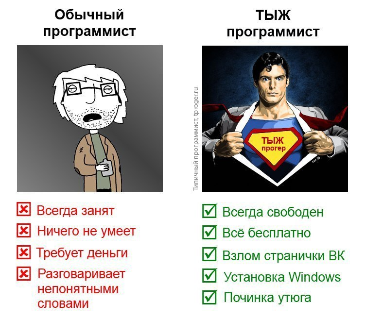
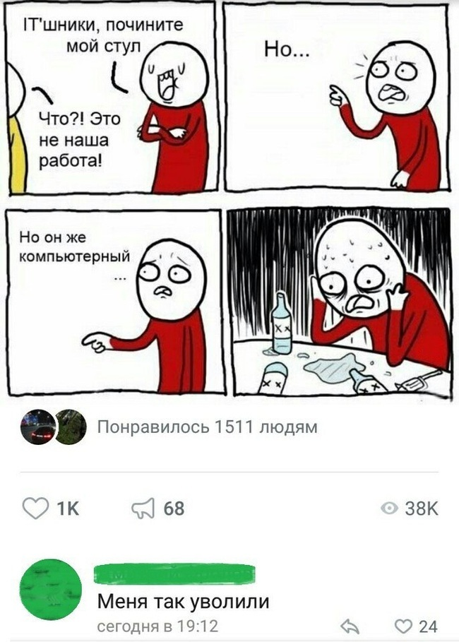

Про праздники, поздравления и специализацию

Все мы любим праздники! Или не все? Я например, не очень их люблю, а некоторые очень даже не люблю. Например, свой день рождения. Об этом имеет смысл рассказать отдельно, потом вернусь к другим. Когда-то давно я указал дату своего рождения везде, где мог - в аське, в скайпе, затем в контакте, когда он появился и всё это заботливо напоминало множеству моих знакомых о факте моего существования. К сожалению я не сразу понял, чем это грозит. По мере увеличения количества этих знакомых, увеличивалось и количество "поздравлений" с днём рождения. Что же в этом плохого? Дело в том, что я обладал рядом навыков и опытом, который мог быть кому-то полезен и в день рождения я получал от пяти до пятнадцати звонков примерно следующего вида:
- Хээээй-привет-как-дела-с-днём-рождения-переустанови-мне-винду!
- Счастья-тебе-удачи-здоровья-у-меня-навернулась-программа-для-записи-дисков!
- А-правда-что-у-тебя-день-рождения-ну-тогда-с-ним-кстати-у-меня-рейдмассив-рассыпался!
- Мужик-поздравляю-с-днюхой-сможешь-заехать-посмотреть-мой-системник?
Всё это и множество других вариантов поздравлений зачастую произносилось слитно, на одном дыхании, одним восторженным предложением. То есть, интонация была поздравительная, смысл - не очень. Мол, поздравляю тебя, у меня рейд рассыпался и теперь это твоя проблема! Иногда поздравление выглядело нормально, следовало несколько связных и осмысленных предложений, а потом, подойдя издалека, человек интересовался, как у меня со временем и не мог бы многоуважаемый джинн быть любезен? Сначала Джинн был любезен, но спустя несколько лет такой котовасии любезность резко устремилась к нулю.
Самое интересное заключается в том, что большинство людей конечно предлагали за решение их проблем деньги, но деньги настолько смешные, что даже десять-пятнадцать лет назад я чувствовал себя так, будто меня унизить хотели, а не поздравить. А когда ты отказываешься, собеседник искренне удивляется - как это ты не хочешь за 300 рублей приехать на Гайву и посмотреть его компьютер???
По всей видимости, сам факт моего рождения автоматически предполагал какой-то набор обязательств, которые я на себя должен был взять, в противном случае акушер, наверное, должен был затолкать меня обратно без права дальнейшего появления на свет.
Конечно, запросы "срочной компьютерной помощи" так или иначе поступали на протяжении всего года, но в день рождения они приходили оптом.
Были и те, кто искренне считал, что я должен им помочь бесплатно. Снизойдя со своих сияющих высот, они даже готовы мне были оплатить автобус туда и обратно. Например, начальница в КЭС Прикамье, где я работал лет 10 тому крайне удивилась, когда я отказался в нерабочее время ехать помогать с компьютером её подруге - "тебе что, сложно что ли?". В основном таким грешили женщины, особенно молодые и особенно считающие себя симпатичными. Видимо, как я появился на свет с набором обязательств перед общественностью, так же они появились с некими привилегиями.

Самое интересное, что у множества людей в голове формируется некий стереотипный образ "тыжпрограммиста", который должен знать и уметь всё, причём всё - это намного больше, чем вы на первый взгляд можете себе представить. Про всякие засорившиеся принтеры и сломанные наушники и калькуляторы говорить вообще не стоит. Забарахлила автомагнитола? Это ко мне! Где в телевизоре "не-знаю-модели-какой-то-хитачи" включить телетекст? И это ко мне! Какую программу выбрать для стирки пуховика в стиральной машине? Тоже ко мне - про программы ведь! Виниловый проигрыватель крутит пластинки быстрее, чем должен? Ну, вы поняли! Отдельно забавляли люди, старательно убеждающие меня в том, что я умею взламывать странички вконтакте, что наверняка делаю это постоянно и чуть ли не каждый день, но почему-то отказываюсь в этом признаться и обязательно должен им с этим помочь! Ведь мне за это (представляете, да?) даже заплатят! ДАЖЕ!!! ЗАПЛАТЯТ! ДЕНЬГАМИ!!! Рублей 300, может быть даже 500!!!

Так же поступали "заманчивые" предложения и совершенно не связанные с моей деятельностью. В момент серьёзного завала на работе мне ласково улыбались, строили глазки и предлагали перетаскать содержимое двух шкафов с документами с третьего на пятый этаж. Если бы меня попросили нормально, я бы помог, но когда у меня появилось бы на это время. При этом было множество людей, действительно просиживающих штаны, кто мог этим заняться, но я в силу своего возраста, видимо был назначен "слабым звеном". Я так же ласково улыбался в ответ, делал влюблённое выражение лица и искренне вслух жалел очередную девочку в связи с потенциальными проблемами доступа к одноклассникам с её рабочего места в следующем месяце. Просто терпеть не могу, когда мною пытаются манипулировать, особенно так. Это всё-равно что низвести человека до уровня животного, мотивированного исключительно инстинктами. Ну хорошо, может быть не совсем животного, тут скорее дядюшка Фрейд со своим бессознательным, тем не менее.
Маразм крепчал. Сначала я вежливо спрашивал, к какому проктологу обычно ходит вопрошающий, когда у него болят зубы? Объяснял, что есть свои узкие специализации и "врач" - это собирательное понятие, так же как "программист" (коим я никогда не был), системный администратор, инженер и ряд других специальностей. Потом я сдался и перестал объяснять. Я просто клал трубку. Затем ставил программы для создания блек листов, автоматически сбрасывающие звонки, поступающие с особо отличившихся номеров. Я перешёл на линукс, я 15 лет не пользовался виндой, я много лет не поддерживал машины на винде, количество моих навыков, полезных для простых пользователей знатно сократилось (о чём я нисколько не жалею), звонков стало меньше, но всё ещё один знакомый отца может позвонить ночью и спросить например, чем ему сжать видео под виндой, чтобы отправить на алиэкспресс в претензию. Не смотря на все убеждения, что я этого не знаю, он как заведённый спрашивает "ну может хоть что-нибудь подскажешь?". Когда же люди научатся пользоваться гуглом? Почему я среди ночи должен это делать за них? Видимо, я расслабился за последние лет шесть и пора снова настраивать блеклист.
Ну ты это, с днём рождения!

Успехов тебе там всяких, здоровья, удачи... Ещё чё-нибудь...
А теперь оставим всё то, что описано выше и вернёмся к праздникам. Есть ещё один повод не любить дни рождения - это поздравления на работе. Как это обычно происходит? Собирается десяток человек, с одной стороны у стены стоишь ты, как приговорённый к расстрелу, с другой выдвигают одного главного и он начинает мучительно, как остатки зубной пасты из тюбика, выдавливать из себя слова, о том, какой ты хороший и замечательный и о том, как все хотят, чтобы всё у тебя было хорошо. В эти моменты мне хочется куда-нибудь деться, но так положено и ты стоишь, натянув на себя дежурную улыбку, киваешь, благодаришь... Ты живёшь в социуме. Всем пацакам приказано надеть намордники и радоваться! Причём радоваться чётко, быстро, по расписанию и не задавая лишних вопросов. Твоё личное внутреннее состояние и настроение при этом никого не должно волновать. Родился в этот день? Терпи и радуйся! И намордник не забудь! Мы все терпим по очереди.
И про дежурные поздравления. Какой-нибудь условный сферический Вася в вакууме не общался со мной три года и тут поздравляет меня с днём рождения, желает мне и того и другого и третьего и пятого... Хочется задать резонный вопрос - ты три года терпел? Держал всё в себе? Искренне всего этого мне желал, но ждал, когда накопится побольше, чтобы кумулятивный эффект сложносочинённого пожелания пробил броню моей чёрствости и я, упав на колени, зашёлся в рыданиях, размазывая сопли счастья по лицу? Как-то в это не верится, извини, Вася.
То же самое можно отнести и к другим поздравлениям - с новым годом, с международным жёнским днём, с днём защитника отечества, с днём взятия бастилии - без разницы. Я не против поздравлений вообще, я против неискренних поздравлений и поздравлений пустых, дежурных. Вам кто-то дорог, с кем вы давно не общались? Позвоните ему без повода, пообщайтесь просто так, узнайте, как у него дела. Поверьте, это будет намного приятнее и вам и ему. Есть множество людей, которых я незаслуженно обделил вниманием, которые мне дороги, но о которых я начал забывать. Думаю, у вас тоже найдётся множество таких. Пролистайте телефонную книгу, вспомните что-то хорошее, связанное с человеком и, если у вас возникнет такое желание, если вы поймёте, что этот человек действительно для вас важен, наберите его номер, пообщайтесь. Желательно, конечно, делать это в нерабочее время, чтобы никого не обременять. И учитывать социальный статус - например, ваши "бывшие" могут этого совершенно не понять, как и их близкие. Пишите и звоните людям тогда, когда вам от них ничего не надо и не тогда, когда это "положено" делать - в этом, как мне кажется, залог хороших здоровых отношений между людьми.
Так что же такое настоящий праздник? Лично для меня это сценарий, близкий к следующему. Ты просыпаешься сам, на улице прекрасная погода (не важно, какое время года), тебе не нужно никуда торопиться, нет никаких неотложных дел, у тебя прекрасное настроение и ты понимаешь - вот он, праздник! Берёшь заначку, выходишь на улицу без какой-то особой цели, ставишь какой-нибудь плейлист, который любил когда-то, но давно уже не слушал, идёшь куда глаза глядят, покупаешь себе то, что не позволяла купить жаба. Ешь что-то вкусное и, вероятно, совершенно неполезное для организма. Звонишь кому-нибудь из друзей и болтаешь с ними. А ещё делаешь подарок кому-нибудь из тех, кто тебе близок. Не обязательно что-то дорогое или очень ценное, это может быть и просто шоколадка. От такого подарка "не себе", получаешь порою больше удовольствия, чем от чего-либо другого. Просто очень классно чувствовать, что ты сделал кому-то приятное, видеть радость этого человека. Для этого совершенно не нужно ждать какой-то дурацкой цифры в календаре.
Цените тех кто рядом, но и себя любить не забывайте. Это вполне нормально. Всем добра.
Теги: мысли-вслух